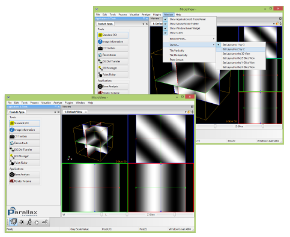
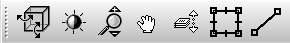
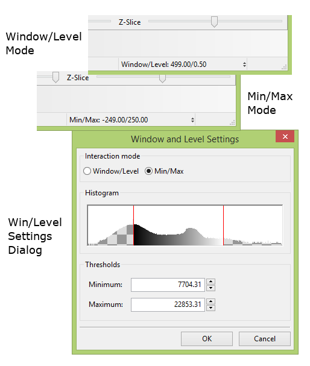
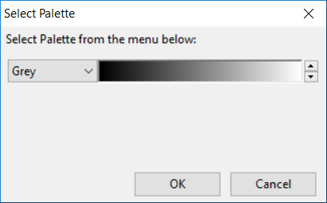
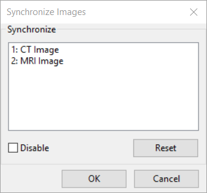

Screen Layout
This section describes the basic screen layout of the MicroView application and some of it's visual cues.
Overview
By default, the MicroView display consists of an application toolbar on the far left side of the screen, and one or more viewer windows contained within a notebook on the right side of the screen. Each viewer window contains a 3D image viewport in the center-left of the window, and a column of three 2D viewports on the right side of each window. MicroView also contains a menu at the top of the application window, Window and Level adjustment scrollbars at the bottom and status and progress indicators at the extreme bottom of the window. It contains image-specific tools in the upper right corner of each notebook page and context-sensitive menus in a variety of locations. Finally, it contains an interaction palette just above the status bar, that contains buttons to toggle the behavior of mouse clicks and mouse motion in MicroView.
Modifying the Layout
Viewports
Each viewport in MicroView can be individually maximized by
double-clicking the left mouse button over the viewport. When in the
maximized state, the display can be restored by double-clicking the left
mouse button while continuing to position the mouse over the viewport.
The display of individual viewports can be managed by selecting the
appropriate entries under the Window menu as well (Window → Layout).
The basic layout of MicroView can also be changed: Select
Window → Layout → Set Layout to 2-by-2 to display MicroView as a
2-by-2 grid of viewports. Select Window → Layout → Set Layout to 1-by-3
to switch back to the default arrangement.

Tabs and Notebooks
Generally speaking, a majority of the layout features of MicroView are customizable by click-and-dragging them from one place on the screen to another.
Toolbar

All of MicroView's analysis tools are available through pull down menus. The most commonly used tools and applications are also available in the toolbar on the tab named "Tools & Apps", at the left hand side of the main window. Whenever a tool is launched, a new tabbed window will appear in the toolbar.
Interaction Palette
MicroView's Interaction Palette contains convenient buttons that change the default mode of mouse interaction with the application. By default, left (or primary) mouse clicks and drags within the 3D and 2D viewports changes the orientation of the image on the screen. By clicking on the appropriate button in the palette, this behavior can be changed to one of a number of other modes. Each mode can be additionally accessed by either a different mouse button, or combining Shift and/or Ctrl with a mouse button, as described below. Using the Interaction Palette is particularly convenient in one or two mouse button environments.

Window and Level Controls
A common task, when viewing images with greater dynamic range than the capabilities of the viewing workstation, is the adjustment of image brightness and contrast. MicroView allows adjustment of grayscale image brightness by defining either an image's window and level setting, or by defining the minimum and maximum grayscale values to display. Window and Level scrollbars are positioned at the bottom right side of MicroView's main window, and can be interactively adjusted. The actual window and level values will be displayed in the statusbar at the very bottom right corner of MicroView. To switch to the min/max approach to adjusting image brightness and contrast, or to explicitly set image window and level values manually, right-click over the window/level text in the statusbar. A popup menu will appear, which contains a number of predefined window/level settings, which are useful when viewing DICOM CT data, and an option to edit window and level values directly.

Context-Sensitive Menu

By default, right-clicking over the 3D image viewport will produce a context-sensitive menu. A variety of menu options exist, but generally, they focus on adjusting the viewport orientation. Note that clicking the right mouse button and dragging the mouse will activate, by default, the zoom feature in MicroView, so the mouse must be stationary when right-clicking to produce the context-sensitive menu.
Image-specific Tools
 Palette
Palette
Clicking on the palette icon in the right hand corner of each notebook window will produce a dialog from which different color palettes may be selected.

 Synchronization
Synchronization
Clicking on the synchronization icon in the right hand corner of each notebook window will produce a dialog from which image synchronization can be adjusted. This tool is useful for synchronizing and comparing registered image sets. Each image loaded can be synchronized with zero, one or more other loaded images. If synchronization is enabled, Image orientation will be linked between images.

Visual Cues
MicroView provides a number of optional visual cues to assist with
navigation within a 3D image. Most of the cues can be toggled on or off
using MicroView's Application Settings... menu entry.
- Volume border - a yellow border drawn around the entire extent of a 3D image. It assists with ROI selection and delineating the entire image.
- Axis labels - Axis labels that move with the 3D image as it is rotated, zoomed or sliced. These may be the conventional medical imaging labels ('A'nterior, 'P'osterior, 'L'eft, 'R'ight, 'I'nferior, 'S'uperior) if the image orientation information is known to MicroView, or the coordinate axes labels ('+X', '-X', '+Y', '-Y', '+Z' and '-Z'), otherwise.
- Plane intersection lines and triangular markers - red, green and blue lines/markers that indicate the intersection between planes. The display of the intersection lines can be toggled on/off; the triangular markers appear in each of the 2D views to highlight the location of the other two intersecting planes, and remain visible always.
- Plane borders - red, green and blue borders around each image plane, visible in both 2D and 3D viewports.
- 2D viewport border highlight - the x, y and z plane viewports are highlighted in red, green and blue, respectively.